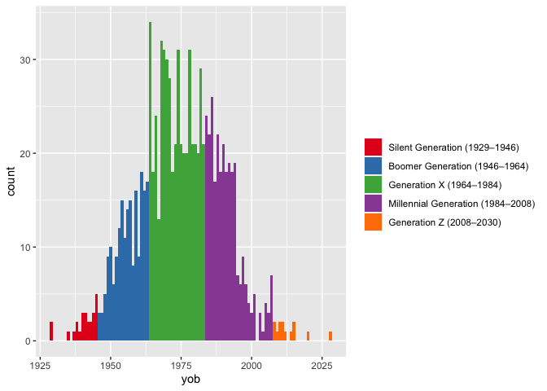
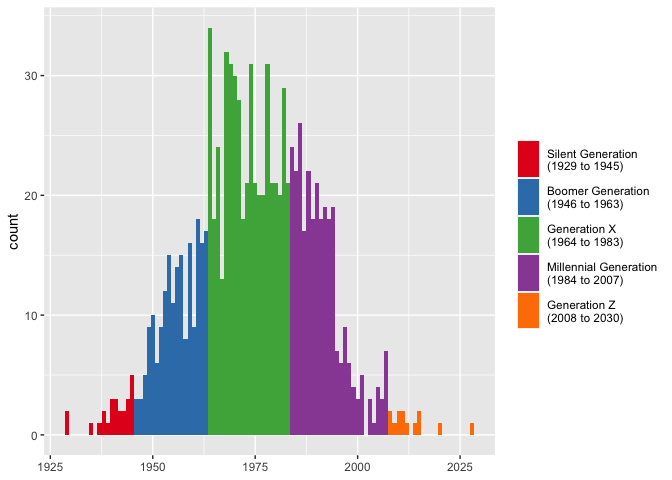
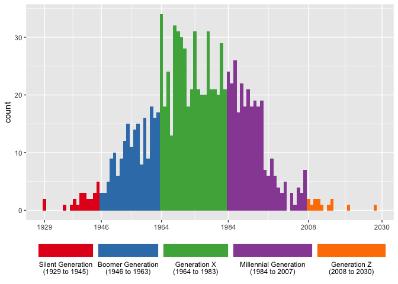

Convert birth years to generation names.
This package contains functions that will convert years of birth into names of generational cohorts. For example, 1989 becomes "Millennial". The package contains several helper functions to modify the underlying lookup table as well as way to query it.
The package currently lives on GitHub, so you can install it like you would with any other package on GitHub:
remotes::install_github("joeystanley/generations")
You can then load it like you can with any library.
library(generations)
For the purposes of this tutorial, I’ll load ggplot as well.
The main function in this package is generations. Given a vector of integers, it’ll return a factor of generation names. First, I’ll generate some random years of birth.
I can now easy convert that into generations.
generations(yobs)
## [1] G.I. Millennial Gen Z Silent G.I. Lost
## [7] G.I. Gen X Lost Lost
## Levels: Lost G.I. Silent Gen X Millennial Gen ZThis function works on any year betwen 1435 and 2030. Numbers outside that range return NA.
Note that by default, the function will return the vector as factor, with the levels ordered so that the oldest generation in the vector is first. To get a character vector instead, add the argument as_factor = FALSE.
There are some tweaks you can do to adjust the output of generations. First, you can return longer forms of the generational names by specifying full_names = TRUE.
generations(yobs, full_names = TRUE)
## [1] G.I. Generation Millennial Generation Generation Z
## [4] Silent Generation G.I. Generation Lost Generation
## [7] G.I. Generation Generation X Lost Generation
## [10] Lost Generation
## 6 Levels: Lost Generation G.I. Generation Silent Generation ... Generation ZWhat this does is simply add "Generation" to the end of each one, unless it’s "Gen X" (or Y, or Z), in which case it’ll expand it out to simply "Generation X".
You can also show the years included in each generation by adding the years = TRUE argument. This will add a space and, inside a pair of parentheses, the start and end years of that generation, separated by an en dash.
generations(yobs, years = TRUE)
## [1] G.I. (1908–1929) Millennial (1984–2008) Gen Z (2008–2030)
## [4] Silent (1929–1946) G.I. (1908–1929) Lost (1886–1908)
## [7] G.I. (1908–1929) Gen X (1964–1984) Lost (1886–1908)
## [10] Lost (1886–1908)
## 6 Levels: Lost (1886–1908) G.I. (1908–1929) ... Gen Z (2008–2030)The primary purpose of this is for visualizations, since not everyone is familiar with (or agrees with) the year ranges.
many_yobs <- tibble(yob = floor(rnorm(1000, 1975, 15))) %>% mutate(gen = generations(yob, full_names = TRUE, years = TRUE)) ggplot(many_yobs, aes(yob, fill = gen)) + geom_histogram(binwidth = 1) + scale_fill_brewer(name = NULL, palette = "Set1")

How this additional portion is formatted can be adjusted. If rendering an en dash is troublesome for you, you can change it to something else with years_range_sep. You may also want to change the space between the generation name and the opening parenthesis into a newline character with years_sep, again for visualization purposes.
many_yobs <- many_yobs %>% mutate(gen = generations(yob, full_names = TRUE, years = TRUE, years_sep = "\n", years_range_sep = " to ")) ggplot(many_yobs, aes(yob, fill = gen)) + geom_histogram(binwidth = 1) + scale_fill_brewer(name = NULL, palette = "Set1") + labs(x = NULL) + theme(legend.key.height = unit(1, "cm"))

If you want to get really fancy, you can make the legend keys approximate the width they take up on the x-axis and put better tics marks.
widths <- many_yobs %>% group_by(gen) %>% summarize(width = max(yob) - min(yob)) %>% ungroup() %>% mutate(width = width / max(width) * 1.4) # you may have to fudge this a little more ggplot(many_yobs, aes(yob, fill = gen)) + geom_histogram(binwidth = 1) + scale_fill_brewer(name = NULL, palette = "Set1") + scale_x_continuous(breaks = c(1929, 1946, 1964, 1984, 2008, 2030)) + labs(x = NULL) + theme(legend.position = "bottom") + guides(fill = guide_legend(nrow = 1, label.position = "bottom", keywidth = widths$width, default.unit = "inches"))

To see a list of the generational data, you can use show_generations, which will return a data frame containing the names, start years, and end years.
## name start end
## 1 Gen Z 2008 2030
## 2 Millennial 1984 2008
## 3 Gen X 1964 1984
## 4 Boomer 1946 1964
## 5 Silent 1929 1946
## 6 G.I. 1908 1929
## 7 Lost 1886 1908
## 8 Missionary 1865 1886
## 9 Progressive 1844 1865
## 10 Gilded 1822 1844
## 11 Transcendental 1794 1822
## 12 Compromise 1773 1794
## 13 Republican 1746 1773
## 14 Liberty 1727 1746
## 15 Awakening 1704 1727
## 16 Enlightenment 1675 1704
## 17 Glorious 1649 1675
## 18 Cavalier 1621 1649
## 19 Puritan 1594 1621
## 20 Parliamentary 1569 1594
## 21 Elizabethan 1542 1569
## 22 Reprisal 1517 1542
## 23 Reformation 1497 1517
## 24 Humanist 1459 1497
## 25 Aurthurian 1435 1459You can also get simple information. For example, if you want to know when the start or end year of a particular generation is, you can use get_start() or get_end():
get_start("Silent")
get_end("Millennial")
You can also find the names of neighboring generations with get_prev_gen() and get_next_gen().
get_next_gen("Millennial")
get_prev_gen("Missionary")
Note that if ask for something newer than Gen Z or older than Aurthurian it will return NA.
The data that this package uses is loaded as a hidden object when you load the package. You may modify it with the functions described in this section. These changes will affect the dataset so long as the generations package is loaded. You’ll have to reset the data each time to reload it.
The labels and years for each generation are mostly borrowed from Howe & Strauss’ Generational Theory books. However, not everyone agrees on the names and year ranges for the various generations. For this reason, the generations package makes it easy to modify the generations data to your liking.
To rename a generation, use rename_generation(), with the old name first and the new name second. For example, if you want to use Zoomer instead of Gen Z, you can do so.
rename_generation("Gen Z", "Zoomer")
You’ll get a message informing you that the change has been made. If you now run show_generations() you’ll see that the change has been made and if you rerun generations(), you’ll get updated results.
## name start end
## 1 Zoomer 2008 2030
## 2 Millennial 1984 2008
## 3 Gen X 1964 1984
## 4 Boomer 1946 1964
## 5 Silent 1929 1946
## 6 G.I. 1908 1929
## 7 Lost 1886 1908
## 8 Missionary 1865 1886
## 9 Progressive 1844 1865
## 10 Gilded 1822 1844
## 11 Transcendental 1794 1822
## 12 Compromise 1773 1794
## 13 Republican 1746 1773
## 14 Liberty 1727 1746
## 15 Awakening 1704 1727
## 16 Enlightenment 1675 1704
## 17 Glorious 1649 1675
## 18 Cavalier 1621 1649
## 19 Puritan 1594 1621
## 20 Parliamentary 1569 1594
## 21 Elizabethan 1542 1569
## 22 Reprisal 1517 1542
## 23 Reformation 1497 1517
## 24 Humanist 1459 1497
## 25 Aurthurian 1435 1459generations(yobs)
## [1] G.I. Millennial Zoomer Silent G.I. Lost
## [7] G.I. Gen X Lost Lost
## Levels: Lost G.I. Silent Gen X Millennial ZoomerBecause many people may want to use the term Zoomer instead of Gen Z, a shortcut function, use_zoomer, which is just a wrapper around rename_generation("Gen Z", "Zoomer"), is included in the package. The other shortcut functions are use_gen_y(), use_13th(), use_baby_boom() as well as their reciprocals use_gen_z(), use_millennial(), use_gen_x() and use_boomer().
You may also want to change the years. For example, many people consider 1997 as the end of the Millennial Generation. You can make this change with redefine_generation. With this function, you must specify the new start and the new end year.
redefine_generation("Millennial", 1983, 1997)
## Gen X is now from 1964 to 1982
## Millennial is now from 1983 to 1997
## Zoomer is now from 1998 to 2030Since changing one generation impacts adjacent generations, you’ll get a message showing you what the new ranges are for this, the previous, and the next generations.
You can reset the data back to its original form with reset_generations().